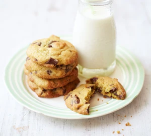

Vintage Cookies

Homepage
Recipe Description
An easy chocolate chip cookie recipe for soft biscuits with a
squidgy middle that will impress family and friends. Make plenty
as they're sure to be a hit
Ingredients
- 150g salted butter, softened
- 80g light brown muscovado sugar
- 80g granulated sugar
- 2tsp vanilla extract
- 1 large egg
- 225g plain flour
- 1⁄2tsp bicarbonate of soda
- 1⁄4tsp salt
- 200g plain chocolate chips or chunks
Steps
- Heat the oven to 190c convection, 170c fan
- Line two baking trays with non-stick baking paper
- Put 150g softened salted butter, 80g light brown sugar and 80g granualted sugar in a boen and beat until creamy